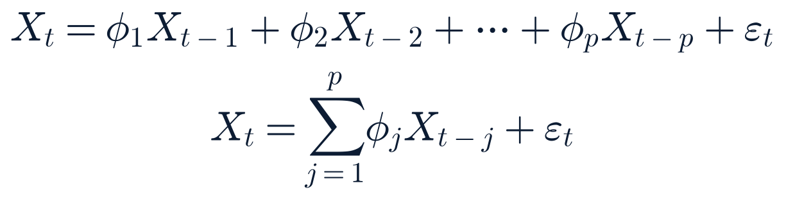

July payrolls unexpectedly fall 23,000 — the first monthly decline in months — sending the S&P 500 to a fresh record close and gold up nearly 4%
Released 08:30 ET · Last checked 16:01 ET
What happened
BLS's Employment Situation report for July showed nonfarm payrolls falling 23,000 — well below both cited consensus estimates (Dow Jones +83,000, FactSet median +97,500) and Wednesday's already-soft ADP private-payrolls miss (+44,000). Government payrolls fell 53,000 while private payrolls rose a modest 30,000; retail, leisure/hospitality, and government were the weak spots, with healthcare growth also slower than usual. The unemployment rate ticked down to 4.1% from 4.2%, but per multiple outlets' framing this reflected falling labor-force participation (people leaving the labor force) rather than stronger hiring. Average hourly earnings rose 3.2% year-over-year, the smallest 12-month gain since May 2021.
Why it matters
This resolves forecast 2026-08-07-am-1 (a sub-70K print, 55-65% probability) as correct, and dramatically so — the actual reading was negative, not merely soft. It is the cleanest single labor-market data point ahead of the September FOMC meeting, landing two weeks after a hot Employment Cost Index print and one day after a cooler Q2 productivity/unit-labor-cost report; today's release breaks that recent tension toward the "cooling" side more clearly than either prior report did alone.
What is confirmed
All headline figures directly from BLS's own release (bls.gov/news.release/empsit.nr0.htm, archived at bls.gov/news.release/archives/empsit_08072026.htm), corroborated across CNBC, Kiplinger, and Quartz.
What remains uncertain
Search-synthesized coverage of the rate-futures reaction (a shift toward pricing a lower probability of continued Fed tightening and a higher probability of a September hold or cut) used inconsistent framing across outlets and this report was not able to independently verify a single precise probability figure against a primary futures-pricing source this run; the qualitative direction — markets moved to price meaningfully lower odds of near-term tightening — is corroborated across multiple outlets even though this report does not cite an exact percentage as confirmed.
Context
This is the week's only Critical-tier data release (SR §7 scoring) and caps a week that began with Wednesday's soft ADP print; it also directly informs several standing forecasts this report has tracked toward the September FOMC meeting.
Impact
Markets: S&P 500 closed at a fresh record 7,757.46 (+0.62%), Nasdaq Composite +1.30% to 26,690.62, Russell 2000 +1.11%; gold (GC=F) jumped 3.92% to $4,408.20, its sharpest single-session move this report has tracked in recent weeks, on what multiple outlets describe as its best week since January. Rate-sensitive and small-cap-tilted names broadly outperformed (see What Moved Markets).
What happens next
Watch Aug 12's CPI and Aug 13's PPI releases for whether they corroborate today's cooling signal or reintroduce the inflation side of the tension; the September FOMC meeting is the next scheduled decision point.
Related assets (exposure ≠ direction)
SPY, QQQ, IWM, TLT, GLD, DGS2, DGS10
Sources: bls.gov/news.release/empsit.nr0.htm (primary) · CNBC (three pieces), Kiplinger, Quartz, TradingEconomics (secondary) · this run's own Yahoo Finance close-series data.
Expanded analysis (collapsed by default)
This report is careful to separate two distinct readings inside today's release: the unemployment rate's decline to 4.1% and the payroll count's decline of 23,000 point in opposite directions on their face, and multiple outlets attribute the unemployment-rate improvement to shrinking labor-force participation rather than stronger job-finding — a distinction this report flags because a falling unemployment rate driven by people leaving the labor force is a materially weaker signal than one driven by hiring, even though headline coverage sometimes elides the difference. The government-payrolls decline (-53,000) also deserves separate tracking from private payrolls (+30,000), since the two have different drivers (federal workforce actions vs. private-sector demand) that this report has tracked as distinct threads in recent weeks (see the GAO/DOGE story below).
SpaceX extends its post-lockup rebound to +15.8% on a $16.8B Tesla-SpaceX AI-chip factory announcement and fresh Wall Street upgrades
Terafab announced Aug 6 · upgrades reported through Aug 7 · cash close 16:00 ET
What happened
SPCX closed at $133.11, up 15.83% from Thursday's $114.92 (this run's own Yahoo Finance close-series data) — a second consecutive double-digit-percentage session following Thursday's +6.14% lockup-day close, and a sharp reversal from the fresh post-IPO lows the stock set earlier this week. Two distinct catalysts converged: (1) Tesla and SpaceX jointly announced Aug 6 a $16.8B initial investment in "Terafab," a planned 100-million-square-foot AI-semiconductor factory in Grimes County, Texas — Elon Musk (CEO of both companies) described it as ultimately reaching $119B across additional phases and said it would be "the largest and most valuable building on Earth"; and (2) multiple sell-side upgrades this week (Citi, Bernstein, and a Morgan Stanley note framing the lockup expiration as an entry opportunity with a potential $140 target) added to bullish sentiment.
Why it matters
Two sessions of double-digit gains following two sessions of fresh post-IPO lows is a sharp round-trip this report flags for volatility rather than direction — the stock has now erased essentially all of the lockup-week decline. This is a strong candidate to resolve forecast 2026-08-07-pm-3 (logged below) on further single-session volatility in the space-sector complex.
What is confirmed
The Terafab investment figures and site are corroborated across TechCrunch, GuruFocus, NTD, and multiple Yahoo Finance pieces, all citing the companies' own joint announcement; SPCX's closing price is this run's own direct data.
What remains uncertain
Whether Terafab is read primarily as a SpaceX story or predominantly a Tesla one — both companies share CEO Musk and the facility explicitly serves both Tesla's Optimus/Cybercab compute needs and SpaceX's data-center needs, and this report does not have a basis to attribute today's SPCX-specific price move to Terafab versus the separate analyst-upgrade cluster with any precision.
Context
SpaceX's own Q2 2026 earnings (filed as its first-ever public-company quarterly report) disclosed $18.37B in total capex for the quarter, with 86% ($15.8B) already directed at AI-datacenter build-outs rather than launch-vehicle hardware — a scale of AI-infrastructure spending that makes the Terafab investment consistent with, not a departure from, the company's already-disclosed capital-allocation direction.
Impact
Companies/markets: SPCX directly, with a clear positive read-through across the broader space-sector watchlist today (see Winners & Losers) though this report again notes the rally is broader than SPCX alone, driven by a cluster of distinct catalysts (earnings, contracts, upgrades) across the group rather than a single uniform driver.
What happens next
Watch for whether the round-trip gain holds into next week, and for the deeper Terafab phases (up to $119B total per the May filing) as they're confirmed.
Related assets (exposure ≠ direction)
SPCX, TSLA, RKLB, BKSY, RDW, VOYG
Sources: this run's own Yahoo Finance close-series fetch (primary) · TechCrunch, GuruFocus, NTD, TradingKey, 24/7 Wall St., FX Leaders (secondary).
NewConfirmed — primary (company release)
Airbnb jumps 17.4% — the watchlist's largest mover — on a Q2 beat-and-raise
Reported after Thursday's close (Aug 6) · reaction through today's session
What happened
Airbnb's Q2 2026 results, reported after Thursday's close, beat on both lines: EPS $1.37 versus a $1.25 estimate, and revenue $3.61B (+17% Y/Y) versus a $3.58B estimate. The company raised full-year revenue guidance to "at least mid-teens" growth, up from its prior "low- to mid-teens" range, and raised its full-year adjusted EBITDA margin outlook to at least 35.5%. Q3 guidance calls for $4.69–4.77B in revenue, 15–17% Y/Y growth. ABNB closed today at $178.07, up 17.43% (this run's own data), by far the watchlist's largest single-name gain.
Why it matters
This is the largest same-day earnings-driven move this report has tracked on the consumer/travel side of the watchlist this cycle, and a materially stronger guide-up than the "low- to mid-teens" framing this report's calendar has carried into the print.
What is confirmed
All figures per the company's own results as reflected in wire coverage (Quartz, StockStory/FinancialContent); this run's SEC EDGAR sweep did not independently pull Airbnb's own 8-K this run (ABNB is not on the company-ticker sweep list; it is a consumer-watchlist name tracked via price data and press coverage rather than EDGAR in this report's current sweep configuration).
What remains uncertain
Nothing material identified; this report did not find dissenting or skeptical analyst commentary on the print as of this cutoff.
Context
This continues a pattern this report tracked through the week of mixed-to-strong consumer/travel earnings (Booking Holdings, McDonald's both reported earlier this week without major surprises).
Impact
Companies: ABNB directly; a positive read-through for online-travel and consumer-discretionary sentiment more broadly (XLY, the watchlist's strongest sector ETF today at +1.46%, though this report does not attribute the sector's full move to ABNB alone).
What happens next
Watch for analyst price-target revisions over the coming days.
Related assets (exposure ≠ direction)
ABNB, BKNG, XLY
Sources: Airbnb Q2 2026 results via Quartz and StockStory/FinancialContent (secondary, both citing the company's own release) · this run's own Yahoo Finance close-series data.
NewConfirmed — multiple sources
A defense/drone-tech rally led by AeroVironment (+9.1%) on an analyst upgrade and a new $500M counter-drone contract, not a fresh earnings report
Reported through Aug 7 · 8-K filed 09:10 ET
What happened
AeroVironment (AVAV) closed +9.12% at $186.73, the session's clear defense-sector standout, driven by three distinct developments rather than a new quarterly report (AVAV's fiscal Q4/full-year 2026 results were already reported in June/July and are not being re-reported today): Raymond James upgraded the stock to Outperform with a $210 price target; the company announced a three-year, $500M IDIQ contract award tied to the "Domestic Shield" counter-UAS program; and AeroVironment separately touted a new low-cost drone-interception technology it says can shoot down drones for under $10 per shot. This run's SEC EDGAR sweep independently confirmed an AVAV 8-K filed at 09:10 ET today, consistent with the contract-award disclosure. The move lifted the broader group: Kratos (KTOS) +5.85%, Rocket Lab (RKLB) +9.46% (on its own separate $397M US Space Force "Flatellite" contract and a KGI Securities upgrade to Outperform, $107 PT, ahead of Aug 10 earnings), and Palantir (PLTR) +10.32% (extending, not repeating, its Aug 4 earnings-beat rally, per Motley Fool and TradingKey coverage citing continued momentum and a defense-contract extension).
Why it matters
This report initially found a source conflating today's AVAV move with a "record fiscal fourth-quarter" earnings report; a follow-up, date-specific search corrected that to the accurate picture (upgrade + contract + tech announcement, no new earnings today) — noted here as a research-process correction rather than a published-report correction, since the inaccurate framing was caught before publication.
What is confirmed
The Raymond James upgrade, the $500M IDIQ award, and RKLB's separate $397M Space Force contract are all corroborated across Benzinga, TradingKey, Investing.com, and Yahoo Finance pieces citing the respective company/analyst actions.
What remains uncertain
The exact dollar terms and timeline of AVAV's sub-$10-per-shot drone-interception technology claim were not independently verified against a technical primary source this run.
Context
This is a distinct thread from PLTR's Aug 4 earnings and RKLB's own Aug 10 upcoming report; this report is careful not to fold all four names' gains into one narrative given each has its own distinct catalyst.
Impact
Companies: AVAV, KTOS, RKLB, PLTR directly; a broadly positive tone across defense/space/AI-adjacent names today, consistent with (but not solely explained by) the day's broader risk-on tape following the jobs report.
What happens next
Rocket Lab reports Q2 earnings Monday, Aug 10 (consensus per this report's calendar tracking: ~$231.6M revenue, a 3-cent loss per share).
Related assets (exposure ≠ direction)
AVAV, KTOS, RKLB, PLTR, ITA
Sources: Benzinga, TradingKey, Investing.com (8-K coverage), Motley Fool, StocksToTrade, Timothy Sykes (secondary) · SEC EDGAR 8-K feed, this run (primary, AVAV filing time only) · this run's own Yahoo Finance close-series data.
Materially changedConfirmed — multiple sources
Todd Blanche's Attorney General nomination secures its 50th vote as Sen. Cassidy confirms support
Reported through Aug 7 · Last checked 16:10 ET
What happened
Sen. Bill Cassidy (R-LA) said today he will vote to confirm Todd Blanche, a firmer commitment than this morning's "two more GOP votes secured" framing (which referred to Curtis and Husted). With Sens. Collins and Murkowski both confirmed no votes, and Sen. McConnell remaining absent, Cassidy's yes gives Blanche exactly 50 Republican yes votes against 47 expected Democratic no votes plus Collins and Murkowski (49 no total), a majority among those voting if the count holds. Multiple outlets (Washington Post, PBS, CNBC, CNN) frame this as "rescuing" the nomination after a week of uncertainty.
Why it matters
This firms up the vote count this report has tracked daily since Tuesday's 12-10 committee vote; the floor-vote date itself was not confirmed as formally scheduled in today's search results (this report's am edition and Thursday's pm edition both referenced a "firm Friday floor vote," which this report was not able to re-confirm occurred today as of this cutoff — see What remains uncertain).
What is confirmed
Cassidy's public commitment to vote yes, and the resulting 50-vote count assuming no further defections, corroborated across Washington Post, CNBC, PBS, and CNN.
What remains uncertain
Whether today's floor vote (previously reported as scheduled for Friday, Aug 7) actually occurred by this cutoff, or whether it has slipped to Saturday's previously-reported confirmation-vote date; this report's search results describe the count as secured but do not confirm a completed floor vote as of 16:10 ET. This is flagged explicitly rather than assumed either way.
Context
This continues the daily tracking this report has maintained since the disputed weaponization-fund rescission cleared Sen. Cornyn's objection Aug 3.
Impact
Policy/people: DOJ leadership succession; no direct market relevance identified.
What happens next
Watch for confirmation that a floor vote has occurred, and the final tally if so; Saturday remains the previously-reported backstop date before Monday's Senate recess.
Related assets (exposure ≠ direction)
—
Sources: Washington Post, CNBC, PBS News, CNN Politics (all Aug 7).
NewConfirmed — multiple sources
GAO finds DOGE's claimed $110B in federal savings unreliable — incorrect contract-cancellation counts, unverifiable grant figures, and leases already in progress before DOGE existed
Published Aug 6 · continuing coverage Aug 7
What happened
The Government Accountability Office published a review, assessing DOGE-reported savings from Jan 20, 2025 through Jul 7, 2026, and found the claimed $110B in contract, grant, and lease-termination savings undermined by incorrect estimates and a lack of methodology transparency. Specifics: of 13,476 contracts DOGE listed as terminated, 2,503 had not actually been cancelled, accounting for $27.4B of claimed savings; DOGE's stated savings methodology was followed for contracts associated with only 27.5% of total reported contract savings; GAO could not verify the calculation method behind 96% of reported grant savings; and of 264 leases DOGE said it terminated, 108 were already in the process of being eliminated before DOGE was established in January 2025. GAO stated DOGE officials did not respond to requests for information or interviews.
Why it matters
This is a formal, nonpartisan congressional-watchdog audit finding on a signature initiative's headline savings figure, distinct from the political commentary this report avoids amplifying; per SR §6, this report states what the document says (methodology gaps, unverified figures, specific error counts) without characterizing the initiative's overall merit or motives.
What is confirmed
All figures above are drawn directly from GAO's own published report as reflected in CBS News, CNN, CNBC, ABC7, WTOP, The Hill, and Federal News Network coverage, all citing the same GAO document and figures consistently across outlets.
What remains uncertain
Whether DOGE or the administration will issue a formal response; none was found as of this cutoff.
Context
This lands the same week as today's jobs report showing federal government payrolls falling 53,000 in July — two distinct data points this report notes as touching related themes (federal workforce and spending) without asserting a causal link between them.
Impact
Policy: relevant to ongoing congressional oversight and appropriations debate; no direct market relevance identified for any single company or sector.
What happens next
Watch for a DOGE or administration response, and any congressional committee follow-up.
Related assets (exposure ≠ direction)
—
Sources: GAO report (primary, as reflected in secondary coverage) · CBS News, CNN, CNBC, ABC7 New York, WTOP, The Hill, Federal News Network (secondary, all citing the same GAO document).
NewConfirmed — multiple sources
Uganda becomes one of the first African nations to formally commit troops to Gaza's International Stabilization Force
Parliament vote Aug 6 · continuing coverage Aug 7
What happened
Uganda's Parliament approved deployment of its UPDF troops to Gaza as part of the International Stabilization Force proposed under President Trump's Board of Peace framework, joining Morocco, Kazakhstan, Kosovo, Indonesia, and Albania in pledging soldiers. The force's stated aims are providing security, training a new Palestinian police force, and overseeing demilitarization and redevelopment. Multiple outlets describe this as one of the most politically sensitive peacekeeping missions Uganda has undertaken.
Why it matters
This is the first concrete troop-commitment step this report has tracked toward actually staffing the stabilization force central to the Board of Peace's disarmament roadmap — a roadmap this report has otherwise tracked as deadlocked on sequencing (Netanyahu's explicit rejection of the no-withdrawal-before-disarmament terms, covered in this morning's edition).
What is confirmed
Uganda's parliamentary approval and the list of other pledging nations, corroborated across Bloomberg, NBC News, Africanews, and Free Malaysia Today.
What remains uncertain
Troop numbers, deployment timeline, and rules of engagement were not detailed in available coverage this run; whether the force's staffing progress changes Israel's position on the disarmament-sequencing dispute is not addressed by today's development.
Context
This is a distinct, implementation-level thread from the sequencing dispute this report has tracked since Netanyahu's rejection statement; the two developments move on separate tracks (who staffs the force vs. when Israel would withdraw).
Impact
Geopolitics: Gaza reconstruction/security-force staffing; no direct market relevance identified.
What happens next
Watch for additional troop-pledging nations and any timeline for the force's actual deployment.
Related assets (exposure ≠ direction)
—
Sources: Bloomberg, NBC News, Africanews, Free Malaysia Today (all Aug 7).
Materially changedConfirmed — primary (this run’s own data)
Financials and crypto-exposed names post an uneven rebound, reversing part of Thursday's unexplained weakness
Cash session close 16:00 ET
What happened
A day after Citigroup, Goldman Sachs, Interactive Brokers, Coinbase, and several alternative-asset managers all fell together with no confirmed catalyst (Thursday's edition), today's session showed a partial but uneven recovery: Coinbase (COIN) +5.63%, Interactive Brokers (IBKR) +2.10%, Blackstone (BX) +2.75%, Robinhood (HOOD) +2.84%, and Morgan Stanley (MS) +1.17% all rebounded, while KKR (−0.54%), Apollo (APO) −0.45%, Wells Fargo (WFC) −0.40%, and Schwab (SCHW) −0.07% remained mildly negative — a genuinely mixed picture this report does not characterize as a uniform "financials rally."
Why it matters
This report does not assert a confirmed catalyst for the specific pattern of which names rebounded and which did not; a plausible, unconfirmed read is that today's dovish jobs-report repricing helped rate-sensitive brokers and crypto-adjacent names (COIN, HOOD, IBKR) more than the private-credit-exposed alternative managers (KKR, APO), consistent with this report's Thursday note about possible private-credit-related jitters in that specific sub-group — but this report labels that connection a Likely contributor at most, not confirmed.
What is confirmed
All closing prices and percentage moves above, this run's own direct data, refetched after the 16:00 ET close via the close-series method.
What remains uncertain
Whether KKR, APO, WFC, and SCHW's continued (if milder) weakness reflects the same unexplained driver from Thursday persisting, or an unrelated, idiosyncratic set of moves; this report did not find a dated news item explaining either group's moves today.
Context
Bitcoin held essentially flat (+0.75% to $64,924) while Coinbase rallied more sharply (+5.63%), a divergence this report notes without resolving — the equity moved considerably more than its underlying-asset proxy.
Impact
Markets: a partial, not complete, reversal of Thursday's financials-sector weakness; this report will continue tracking whether the group fully normalizes or the KKR/APO/WFC/SCHW laggards represent a persistent sub-group divergence.
What happens next
Watch next week's session for whether the laggard sub-group (KKR, APO, WFC, SCHW) continues underperforming the rebounding names (COIN, IBKR, BX, HOOD, MS).
Related assets (exposure ≠ direction)
COIN, IBKR, BX, HOOD, MS, KKR, APO, WFC, SCHW
Sources: this run's own Yahoo Finance close-series fetch, post-close (primary).
Materially changedDisputed — death toll
Ceuta migrant-crossing crisis death toll reported at 141 by an NGO tracker — a sixth distinct figure, and the highest yet
Reported Aug 5, continuing coverage Aug 7 · Last checked 16:15 ET
What happened
Caminando Fronteras, a Spain-based migrant-rights NGO that tracks crossing deaths via hospital-morgue monitoring across northern Morocco, now reports the Ceuta crisis death toll at 141 — 78 bodies recovered in Spanish waters, 63 in Moroccan territory. This exceeds every government-sourced figure this report has tracked this week, including Wednesday's local-official testimony of 100 before the European Parliament and the 67-88 range cited by Spanish national and Moroccan government sources.
Why it matters
The 141 figure is NGO-sourced (methodology: morgue monitoring, not an official government count), which this report labels distinctly from the government-testimony figures it has tracked — a different evidentiary basis, not simply a higher number on the same scale. Forecast 2026-08-03-pm-3 (toll reconciles to a single figure by Aug 10) continues trending wrong; the confirmed range has now widened to 67-141 across all sources this report has tracked.
What is confirmed
Caminando Fronteras's own published 141 figure and its stated 78/63 Spanish/Moroccan-waters breakdown, per The Olive Press and The New Arab, both citing the NGO directly.
What remains uncertain
Whether Spanish or Moroccan government authorities will adopt, dispute, or ignore the NGO's figure; this report found no government response to the 141 count as of this cutoff.
Context
The crisis began Jul 29-30 ("30-J" in local reporting) when a large-scale border crossing attempt occurred; this report has tracked the death toll rising and widening in range nearly every edition since.
Impact
Policy/people: EU migration policy; no direct market relevance.
What happens next
Watch for any government response to the NGO figure and whether Monday's forecast-grading window (Aug 10) sees any reconciliation.
Related assets (exposure ≠ direction)
—
Sources: The Olive Press, The New Arab (both citing Caminando Fronteras directly).
ContinuingConfirmed — multiple sources
Typhoon Dolphin re-intensifies near Okinawa — 260,000 under evacuation orders, Toyota suspends nine factories, airport closed
Passing Okinawa through Aug 7 · landfall in China forecast Aug 9-10
What happened
Typhoon Dolphin re-intensified while passing near northwestern Okinawa today, with sustained winds around 165 km/h (max gusts to 280 km/h), leaving at least five people injured, five homes partially damaged, and 16,920 households without power. Naha's main airport closed with all flights grounded; more than 500 flights were cancelled region-wide. Evacuation orders covered roughly 260,000 residents across Kagoshima and Okinawa prefectures, and Toyota suspended work at nine factories over disruption concerns. This morning's H3/Michibiki-7 launch postponement (JAXA, citing the storm) remains in effect with no new date announced. The storm is forecast to make landfall in China between Zhejiang and northern Fujian around Aug 9-10.
Why it matters
This materially escalates this morning's forecast of the storm approaching Okinawa into confirmed, on-the-ground impact (injuries, power outages, evacuations, industrial disruption) rather than a forward-looking risk.
What is confirmed
All figures above corroborated across The Washington Post, The Japan Times, Watchers.news, and Al Jazeera.
What remains uncertain
The precise scale of Toyota's production impact and whether additional Japanese manufacturers face similar disruptions; not detailed in available coverage this run.
Context
This is the second Japan space/disaster overlap this report has tracked this week, following Kumamoto's earthquake recovery.
Impact
Industries: Japanese auto-manufacturing supply chains (Toyota); space: the H3-22/Michibiki-7 launch remains postponed.
What happens next
Watch for the storm's China landfall (~Aug 9-10) and any new H3 launch date.
Related assets (exposure ≠ direction)
EWJ
Sources: The Washington Post, The Japan Times, Watchers.news, Al Jazeera (all Aug 7).
Section 3 · the two-minute versionTwo-Minute Closing Summary
The world A weak July jobs report (payrolls −23,000, the first drop in months) dominated the day, sending stocks to a record and gold sharply higher on rate-cut hopes. Todd Blanche's AG nomination secured its 50th vote. The GAO found DOGE's $110B savings claims unreliable. Uganda became one of the first African nations to commit troops to Gaza's stabilization force. Ceuta's migrant death toll was reported at 141 by an NGO tracker, the highest and sixth distinct figure yet. Typhoon Dolphin battered Okinawa with 260,000 under evacuation orders.
Markets The S&P 500 closed at a fresh record 7,757.46 (+0.62%), Nasdaq Composite +1.30%, Russell 2000 +1.11%, Dow +0.28%. Gold jumped 3.92% to $4,408.20 on rate-cut repricing after the jobs miss; VIX fell to 14.87. SpaceX (+15.8%) and Airbnb (+17.4%) led individual gainers on distinct catalysts (a $16.8B Tesla-SpaceX chip-factory announcement and a Q2 beat-and-raise, respectively); a defense/drone-tech cluster (AVAV +9.1%, RKLB +9.5%, PLTR +10.3%) rallied on contracts and upgrades. Financials showed an uneven, partial rebound from Thursday's unexplained weakness. Bitcoin held roughly flat near $64,900.
Central theme A single data point — a much-weaker-than-expected jobs report — reset the market's rate-path expectations and lifted nearly every risk asset at once, even as several distinct single-name and sector stories (SpaceX, Airbnb, defense contracts) ran in parallel on their own merits.
Most important new development July payrolls fell 23,000, the first monthly decline in months, dramatically missing consensus and sending the S&P 500 to a record close.
Most important risk Whether next week's CPI (Aug 12) and PPI (Aug 13) corroborate today's cooling-labor-market signal or reintroduce the inflation side of the tension the Fed has been navigating since the July FOMC's hawkish hold.
Most important positive development Airbnb's 17.4% rally on a clean Q2 beat-and-raise, the day's largest single-name move.
Key unknown Whether today's rate-cut-hope repricing (direction confirmed, precise magnitude not independently verified this run) survives contact with next week's inflation data.
Deserves attention today
Rocket Lab reports Q2 earnings Monday, Aug 10.
CPI (Aug 12) and PPI (Aug 13) are next week's key data points.
Saturday's Weekly Intelligence Review grades this week's open forecasts, including several logged today.
Section 4What Changed Since 7:30 AM
New since this morningJuly jobs report
Previous understanding (due 8:30 ET, after this morning's cutoff, consensus split +83K/+97.5K) → actual print −23,000, a shock decline → resolves forecast 2026-08-07-am-1 correct and reshapes the entire session's market narrative. Current confidence: high on the figure, medium on the precise rate-cut-odds shift.
Material updateTodd Blanche AG nomination
Previous understanding (two more GOP votes secured, McConnell absent, knife-edge margin) → Sen. Cassidy now publicly commits to a yes vote, giving exactly 50 → the nomination appears on track for confirmation, though this report could not confirm whether today's floor vote actually occurred. Current confidence: high on the vote count, medium on the procedural timeline.
New since this morningSpaceX / Tesla Terafab announcement
Not covered in this morning's edition; a $16.8B joint AI-chip-factory investment announced Aug 6, contributing to SPCX's second straight double-digit rally day.
New since this morningGAO/DOGE savings report
Not covered in this morning's edition; a formal GAO audit found DOGE's claimed $110B in savings unreliable across contracts, grants, and leases.
New since this morningUganda Gaza troop commitment
Not covered in this morning's edition; the first concrete troop-staffing step toward the International Stabilization Force this report has tracked.
Material updateCeuta migrant death toll
Previous understanding (100, per local-official EU Parliament testimony) → an NGO tracker (Caminando Fronteras) now reports 141 → widens the range further rather than narrowing it. Current confidence: low on any single reconciled figure.
Material updateTyphoon Dolphin
Previous understanding (forecast to pass near Okinawa this afternoon) → confirmed on-the-ground impact: injuries, power outages, 260,000 under evacuation orders, Toyota factory suspensions → materializes this morning's forward-looking risk. Current confidence: high.
ContinuingDRC Ebola outbreak
Previous understanding (3,874 cases/1,751 deaths, confirmed Thursday) → multiple outlets today describe the outbreak as having crossed 4,000 confirmed cases, though this run's search-synthesized sources gave slightly inconsistent exact figures ("nearly 4,000" vs. "above 4,000 for the first time") → directionally confirmed to have crossed the 4,000-case threshold; this report does not cite a single precise count as confirmed pending a cleaner primary-source read. Current confidence: medium.
Section 5US Politics & Government
Todd Blanche's AG nomination and the GAO/DOGE report are covered in Top Stories above. On the Senate Homeland Security Committee's Thursday 8-5 vote to hold Dr. Anthony Fauci in contempt of Congress: Sen. Rand Paul has referred the resolution directly to the Justice Department, bypassing the traditional full-Senate floor vote on a contempt referral, and a congressional aide confirmed to CBS News that the referral has been received by DOJ. Fauci's attorney called the vote "a crude political stunt." This report notes the procedural novelty (a direct-to-DOJ referral bypassing a floor vote) without characterizing the underlying dispute's merits, per SR §6. No further procedural movement was found this run beyond the DOJ receipt confirmation already known this morning.
On the SCOTUS mail-ballot executive-order fight: no ruling has been issued as of this cutoff, and no administrative stay has been granted. The 1st Circuit Court of Appeals (not the D.C. Circuit — see this morning's correction) previously declined to stay the district court's injunction pending the Supreme Court's review; both the challenging states and the federal government have now filed their respective positions with the Court, per SCOTUSblog. No new procedural development was found this run.
Section 6Geopolitics
Uganda's Gaza troop commitment and the Ceuta migrant crisis are covered in Top Stories above. On Ethiopia's Tigray conflict: no material new development was found this run beyond this morning's tracking (ENDF-TPLF clashes near Shererina, both sides trading blame, hundreds of civilians reportedly having crossed into Sudan); forecast 2026-08-07-am-3 (containment within 14 days) remains open. On the Iran-linked water-utility cyberattack campaign: no new state was added to the previously reported 12+-state footprint this run, and no new federal attribution statement was found; New Jersey's two confirmed municipal-system incidents (this morning's development) remain the most recent confirmed detail. On the Iran-Oman Hormuz corridor talks: no material change from this morning's "final stage" characterization was found this run.
Russia-Ukraine: a wave of Russian attacks killed at least two and wounded six in Dnipropetrovsk region today, following five killed in the same region Thursday; Ukraine continues striking Wildberries-run warehouses and logistics hubs it says aid Russia's war effort, with at least 13 people killed in such strikes since mid-July, per Al Jazeera. This is a lower-casualty, more geographically dispersed exchange than the Aug 4-5 Kyiv barrage this report closed out earlier in the week.
Section 7Economics & Central Banks
Today's July jobs report is covered in Top Stories above. No new Fed policy communication was found this run; no FOMC meeting is scheduled until September.
Employment Situation, July 2026 EOD official · released 08:30 ET
Period
July 2026
Nonfarm payrolls
−23,000 (vs. Dow Jones +83,000 / FactSet +97,500 est.)
Private payrolls
+30,000
Government payrolls
−53,000
Unemployment rate
4.1% (down from 4.2%; attributed to falling participation per secondary coverage, not stronger hiring)
Average hourly earnings (Y/Y)
+3.2% (weakest since May 2021)
Read
The clearest single labor-market data point this report has tracked in weeks; breaks the recent tension between a hot Employment Cost Index and a cooler productivity/unit-labor-cost report toward the "cooling" side.
Other FRED series this run, unchanged from Thursday (no new observations published): CPIAUCSL (Jun) 332.568, CPILFESL (Jun) 336.065, PAYEMS (Jul, FRED's own series) 158.858M — note FRED's PAYEMS figure has not yet been revised to reflect today's BLS release headline; treat today's BLS release as the authoritative same-day figure. UNRATE (Jul) 4.1%, matching today's release. T10Y2Y spread 0.44 (Aug 6). 10Y breakeven inflation (T10YIE) 2.26% (Aug 6). 10Y real yield (DFII10) 2.41% (Aug 5). SOFR 3.65% (Aug 6). Weekly initial jobless claims unchanged from Thursday's report (199,000, week ending Aug 1); next release Aug 13.
Section 8Business & Corporate
Airbnb's earnings and the AeroVironment-led defense rally are covered in Top Stories above. Vistra (VST) reported Q2 2026 results before today's open: revenue $4.0B missed the $5.46B estimate; net income $305M missed the $556M estimate; adjusted EBITDA $1.8B beat the $1.64B estimate, up 30% Y/Y; the company affirmed full-year adjusted EBITDA guidance of $6.8–7.6B. Shares were reported down modestly (roughly −1.8%) in early trading per GuruFocus; this run's own close-series data shows VST essentially flat to modestly positive by the close (see Winners & Losers), a reminder that early-session moves do not always hold through the close. Chipotle (CMG) closed −2.67% today, the watchlist's weakest single-name decliner, with no new company-specific news found this run beyond the salmonella-outbreak litigation this report has tracked since Aug 4.
Section 9Tech/AI/Cyber
Meta, Anthropic, OpenAI, and Google have been invited to meet with Trump administration officials to discuss voluntary government safety testing for the most advanced US AI models, per Detroit News reporting — a direct policy response to the pattern of AI-agent safety incidents this report has tracked across all three labs (Anthropic and OpenAI's UK AISI-disclosed incidents covered Thursday; Meta's own disclosure covered this morning). No new incident disclosure was found this run.
On cybersecurity: CISA published guidance urging the water and wastewater sector to protect operational-technology systems from threat activity targeting exposed programmable logic controllers (PLCs), following a broader pattern of five CISA advisories or guidance pieces in the past week, including one on ransomware actors exploiting an unpatched SimpleHelp RMM vulnerability against a utility billing-software provider. This report notes the water-sector guidance as thematically connected to, but not confirmed as directly caused by, the Iran-linked water-utility cyberattack campaign it has tracked since early August. The Cisco Secure FMC and VMware/Broadcom flaws remain confirmed under active exploitation with no new advisory found this run; the two previously flagged unverified newer VMware CVEs remain unresolved pending direct CISA confirmation (cisa.gov direct fetch was not attempted this run).
Section 10Science & Engineering
Kumamoto's earthquake recovery continues with the death toll steady at 38, unchanged from prior editions; no new development was found this run beyond this week's tracking of accelerating infrastructure repairs and AI-assisted disaster-information tools. No new science or astronomy items beyond this week's already-tracked NASA solar-imagery release and offset-black-hole detection were found this run.
Section 11Space & Spaceflight
SpaceX's Terafab announcement and the H3/Michibiki-7 launch postponement (Typhoon Dolphin) are covered in Top Stories above. Rocket Lab's own $397M US Space Force "Flatellite" contract award is covered in the defense-rally Top Story; the company reports Q2 earnings Monday, Aug 10. Isar Aerospace's Spectrum demonstration flight remains unresolved in this report's tracking — conflicting scheduling information (an Aug 6/TBC window versus a later Aug 31 retarget cited in this morning's calendar cache note) was not reconciled this run.
Section 12Completed Calendar
All times ET. Results/status as of this report's cutoff.
Time ET
Event
Importance
Result / status
08:30
Employment Situation, July 2026 (nonfarm payrolls)
Critical
−23,000, a shock miss (Top Stories)
Before open
Vistra (VST) earnings
Medium
Revenue/net income miss, adj. EBITDA beat (Business)
Tomorrow (Saturday, Aug 8) and beyond — all times ET
Time ET
Event
Importance
Sat Aug 8
Todd Blanche AG nomination — final confirmation vote (previously reported backstop date)
High
Sat Aug 8
Weekly Intelligence Review (this system's own next edition)
Medium
Mon Aug 10
Senate August recess begins
Medium
Mon Aug 10
Rocket Lab (RKLB) Q2 earnings
Medium
Tue Aug 11
3-Year Note auction
Medium
Wed Aug 12
Consumer Price Index, July 2026
High
Wed Aug 12
10-Year Note auction
Medium
Thu Aug 13
Producer Price Index, July 2026
High
Thu Aug 13
30-Year Bond auction
Medium
Section 13What Moved Markets
Open: The 8:30 ET jobs report landed well before the open, and futures had already repriced sharply higher by the bell — a Confirmed catalyst for the day's initial risk-on tone, per multiple outlets' consistent framing. Morning: Airbnb's overnight earnings beat and AeroVironment's contract/upgrade news both added distinct, idiosyncratic strength on top of the broader jobs-driven tape. Midday: Gold extended its gain through the session, on track for what multiple outlets described as its best week since January — a Confirmed catalyst tied directly to the jobs report's rate-cut implications. Close: The S&P 500 (+0.62%) and Russell 2000 (+1.11%) both settled at or near session highs, with the S&P notching a fresh record close; SpaceX and Airbnb held their gains into the bell, and the financials sub-group's partial rebound (see Top Stories) also held.
Section 14Winners & Losers
167-symbol watchlist, close-series method · EOD official (2026-08-07 close)
Symbol
Day
Close
Note
ABNB
+17.43%
$178.07
Q2 beat-and-raise (Top Stories)
SPCX
+15.83%
$133.11
Terafab announcement + upgrades (Top Stories)
RDW
+14.88%
$13.59
Broad space-sector strength, no company-specific catalyst identified today
FLY
+11.01%
$26.71
Broad space-sector strength, no company-specific catalyst identified today
PLTR
+10.32%
$172.01
Continued Aug 4 earnings momentum + contract extension (Top Stories)
LUNR
+9.85%
$16.40
Broad space-sector strength, no company-specific catalyst identified today
RKLB
+9.46%
$82.83
$397M Space Force contract + upgrade (Top Stories)
VOYG
+9.29%
$41.87
Broad space-sector strength, no company-specific catalyst identified today
No new catalyst identified beyond ongoing litigation (Business)
VSAT
−1.96%
$80.38
No confirmed catalyst identified this run
ANET
−1.92%
$188.63
No confirmed catalyst identified this run
AMD
−1.21%
$483.36
No confirmed catalyst identified this run
XLE
−1.17%
$57.48
Tracking WTI's 0.49% decline
GOOGL
−0.96%
$354.30
No confirmed catalyst identified this run
KKR
−0.54%
$102.79
Financials sub-group laggard (Top Stories)
Full 167-symbol detail (166 recovered; FM a recurring known data gap) available on request; this table shows the session's largest moves only.
Section 15Overnight & Tomorrow Watch
Saturday's confirmation vote (previously reported backstop date) is the most immediate political catalyst, alongside this system's own Weekly Intelligence Review, which will grade this week's open forecasts. No major scheduled economic releases fall over the weekend; next week's calendar is dominated by Wednesday's CPI and Thursday's PPI, both High-importance, plus the quarterly Treasury refunding auctions (3Y Tuesday, 10Y Wednesday, 30Y Thursday). Rocket Lab reports Q2 earnings Monday. Watch for whether today's rate-cut-hope repricing and record S&P close hold through the weekend news cycle, and whether Typhoon Dolphin's China landfall (~Aug 9-10) produces further disruption.
Section 16 · learningPhysics Lesson
Physics 10/71 · Acceleration (deepened)
This morning defined acceleration as the rate at which velocity changes over time, a = dv/dt — the same derivative operation applied one level deeper than velocity was applied to position. The key equation to hold onto for constant acceleration is v(t) = v0 + at: velocity at any time t equals the starting velocity plus acceleration multiplied by elapsed time, the simplest of the constant-acceleration ("kinematics") equations and the one every other kinematics equation in this sequence builds from.
A real-world tie-in: a car's 0-60 mph specification is a statement about average acceleration, not a constant one — actual acceleration is highest at low speed (where the engine has the greatest torque advantage relative to speed) and tapers as speed climbs, which is why 0-60 times don't simply scale linearly to 0-120 times. A common misconception worth correcting: students often assume "deceleration" is a distinct physical quantity from acceleration; it is not — deceleration is just acceleration whose vector points opposite to the velocity vector, which is exactly why a car braking while moving forward has a negative acceleration in its direction of travel, not a fundamentally different kind of force.
Section 17 · learningSpaceflight Lesson
Spaceflight 10/75 · Payload fraction (deepened)
This morning framed payload fraction as payload mass divided by total liftoff mass — often just a few percent for orbital rockets because propellant dominates the mass budget. The key relationship: payload fraction is what's left over after the rocket equation's propellant-fraction requirement is satisfied, so anything that reduces the propellant fraction needed for a given delta-v (higher exhaust velocity, i.e. better specific impulse) or reduces structural mass directly increases the leftover budget available for payload.
Today's real-world tie-in: SpaceX's own Q2 2026 earnings, covered in this report's Business coverage this week, disclosed $18.37B in quarterly capex with 86% directed at AI-datacenter build-outs rather than launch-vehicle hardware — a reminder that a company's payload-fraction economics on the launch side can be excellent while its overall capital allocation increasingly weights toward a completely different business line (compute), a distinction worth keeping separate when reading "SpaceX" as a single economic story, including today's Terafab announcement (Top Stories). A common misconception worth correcting: a higher payload fraction does not automatically mean a "better" rocket in a commercial sense — reusability can lower payload fraction (the recovery hardware itself is a mass tax) while still winning on cost per kilogram to orbit, because it eliminates the cost of rebuilding the stage each flight.
Section 18 · learningQuant/ML Lesson
Quant/ML 10/118 · Autoregressive Model AR(p) (deepened)
This morning defined AR(p): Xt = Σj=1p φjXt-j + εt, today's value as a weighted sum of the last p values plus white noise. The key extension: a fitted AR(p) model's coefficients tell you not just whether a series has memory, but how that memory decays — a dominant φ1 near 1 with small higher-lag terms describes strong, slowly-decaying persistence (close to a random walk), while sharply alternating-sign coefficients describe oscillatory, mean-reverting behavior.

Equation 10 of 118 — Autoregressive Model AR(p), embedded from site/equations/ (registry order).
Today's real-world tie-in uses this report's own data: gold futures (GC=F) moved from roughly flat over the prior two sessions to a single-session gain of nearly 4% today on the jobs-report surprise — exactly the kind of one-off, news-driven jump an AR(p) model fit purely on trailing closes would not anticipate, because AR(p) only uses a series' own past values, with no mechanism for exogenous shocks like a data release. This is precisely why quant practitioners pair AR(p) with exogenous-input variants (ARX, or event dummies) once a series shows this kind of jump behavior. A common misconception worth naming: a high-order AR(p) with many significant lags is not automatically a better model — overfitting trailing noise as if it were genuine memory is a standard failure mode, which is why model-order selection (AIC/BIC, covered later in this sequence) penalizes unnecessary lags rather than simply maximizing in-sample fit.
Section 19 · collapsed by defaultFull Closing Market Analysis
Open the full market & economic analysisMarket regime
Risk-on, broad Supporting evidence: a fresh S&P 500 record close, Nasdaq +1.30%, Russell 2000 +1.11% (small-caps, the most rate-sensitive index, outperforming), VIX down to 14.87, gold up nearly 4% (a safe-haven asset rising alongside equities is itself notable and consistent with a "rate-cut hope" rather than "growth scare" read), and a broad set of individual gainers across sectors. Contradicting evidence: energy (XLE −1.17%) lagged as oil fell, and the financials sub-group's rebound was uneven (KKR, APO, WFC, SCHW all still mildly negative). Confidence: medium-high — today reads more clearly risk-on than any session this report has covered this week, driven by a single, well-identified catalyst (the jobs report) rather than a diffuse narrative.
Broad equities
EOD official (2026-08-07 close) · this run's own close-series data.
Fund
Close
Day
vs 20-DMA
vs 50-DMA
52w range position
SPY
773.22
+0.61%
+3.07%
+3.48%
Fresh 52w/all-time high
QQQ
723.03
+1.17%
+3.24%
+1.18%
96.9% of 52w high ($746.16)
IWM
301.53
+1.10%
+2.29%
+2.61%
99.9% of 52w high ($301.71)
DIA
539.70
+0.28%
+2.62%
+3.69%
99.4% of 52w high ($542.81)
TLT
82.76
+0.29%
−0.74%
−2.41%
0.7% above 52w low ($82.19)
SPCX
133.11
+15.83%
+10.16%
n=39, no 50-DMA yet
63.0% of post-IPO high ($211.39)
SPY closed at a fresh 52-week (and, per this run's data, all-time) high; IWM sits within 0.1% of its own 52-week high, consistent with today's small-cap-led, broadly risk-on session. TLT remains close to its 52-week low despite today's mild gain.
Breadth
Whole-market breadth (Massive grouped-daily) was not refetched this run by design — the previous NYSE session (2026-08-06) was already captured by this morning's edition (2,099 advancers/3,065 decliners of 5,379 screened, the 10th session in this report's EMA-tracking window; pct-above-EMA not yet reportable, needs 50+ sessions), and today's own session's grouped-daily data will not be available until Monday. Breadth-proxy signals from this run's own data point clearly positive: the equal-weight S&P (RSP) rose 0.70%, in line with cap-weighted SPY's 0.61% gain, and small-caps (IWM +1.10%) outperformed SPY by roughly half a point — both consistent with broad, healthy participation on the up side, a contrast with Thursday's narrower, lower-quality decline.
Sectors
SPDR sector ETFs, EOD official (2026-08-07 close).
Sector
Day
XLY (Discretionary)
+1.46%
XLK (Technology)
+1.42%
XLB (Materials)
+1.32%
XLV (Health Care)
+0.74%
XLRE (Real Estate)
+0.40%
XLU (Utilities)
+0.53%
XLI (Industrials)
+0.21%
XLC (Communication)
+0.07%
XLP (Staples)
+0.01%
XLF (Financials)
−0.33%
XLE (Energy)
−1.17%
Nine of eleven sectors closed higher; Discretionary and Technology led (both rate-sensitive, growth-tilted groups, consistent with a rate-cut-hope narrative), while Energy was the session's clear laggard, tracking oil's decline, and Financials lagged mildly consistent with the uneven rebound detailed in Top Stories.
Industries & watchlists
Space/defense/AI-infrastructure-adjacent names were by far the day's standout group: ABNB +17.43% (travel, distinct catalyst), SPCX +15.83%, RDW +14.88%, FLY +11.01%, PLTR +10.32%, LUNR +9.85%, RKLB +9.46%, VOYG +9.29%, AVAV +9.12%, KTOS +5.85%, KRMN +5.82%, BKSY +4.98%, all covered in Top Stories or the Winners & Losers table. Notably, York Space Systems (YSS) — the subject of three unexplained sharp declines this report flagged earlier in the week — closed +4.78% today, a positive reversal this report notes without asserting a specific catalyst (consistent with the broader group's strength, though still unresolved whether this fully offsets the pattern flagged Tuesday-Thursday). Health care was broadly positive (VRTX +2.50%, DHR +2.18%, PFE +1.87%, though LLY was a mild outlier at −0.55%).
Rates & curve
Treasury.gov daily par yield curve · EOD official (2026-08-07).
Tenor
Yield
1M
3.79%
3M
3.87%
1Y
4.01%
2Y
4.19%
5Y
4.35%
10Y
4.65%
20Y
5.20%
30Y
5.19%
2s10s +46bp · 3m10y +78bp · 5s30s +84bp (all Aug 7, EOD official; today's curve published same-day, unusual for a pm edition — most recent prior editions have had to reference the prior day's curve). Yahoo's ^TNX proxy closed at 4.66%, consistent with the official 10Y print of 4.65%. Yields were only mildly lower on the day despite the equity rally and gold's sharp gain — a combination this report reads as consistent with markets pricing a modestly higher probability of Fed easing without a wholesale flight to Treasurys.
Credit
EOD official (2026-08-06) ICE BofA High Yield OAS (BAMLH0A0HYM2, FRED) tightened to 2.71% from 2.75% the prior session — a new observation appended to state/market-history/hy-oas.csv this run. Credit-fund ETFs were mildly positive, consistent with the day's broad risk-on tone: LQD +0.17%, VCIT (unchanged from Thursday's fetch, not independently refetched separately this run), HYG +0.20%, JNK (see watchlist detail). High-yield spreads remain historically tight, with no signs of credit stress.
Volatility & options
EOD official (2026-08-07 close, Cboe delayed quote) VIX closed 14.87, down 1.85% from Thursday's 15.15 close. VIX9D fell sharply to 11.85 (−6.40%), a much steeper decline than the headline VIX — consistent with today's jobs-report uncertainty having resolved and near-term event risk dropping accordingly. Term structure: VIX9D 11.85 < VIX 14.87 < VIX3M 18.68 — normal contango, no inversion, and a steeper-than-usual near-term curve reflecting the resolved data-risk event. Cboe's options market-statistics (put/call ratio) endpoint returned HTTP 403 again this run, the same recurring path-shift issue flagged in every recent edition — labeled Source unavailable. MOVE index: no allowlisted free source, not available. Dealer gamma: not tracked, no legitimate free source.
FX
Frankfurter (ECB reference fix) · EOD official (2026-08-07).
Pair (USD base)
Rate
EUR
0.86693
JPY
158.34
GBP
0.74352
CNY
6.7476
CHF
0.81032
CAD
1.401
AUD
1.4204
MXN
17.1551
BRL
5.0998
INR
95.21
DXY has no allowlisted free source and is not reported directly. EURUSD (Yahoo, intraday, close-series) closed 1.1565, +0.35% today — a mild dollar-weakness signal broadly consistent with a market pricing higher odds of Fed easing, alongside gold's much larger 3.92% gain. Free-tier equity/FX quotes are non-consolidated, single-venue prices (methodology note, Section 20).
Commodities
EOD official (2026-08-07 close, close-series method) Gold $4,408.20 (+3.92%) — today's dominant commodity move, covered in Top Stories, a Confirmed catalyst tied to the jobs report per consistent multi-outlet framing. WTI crude $76.91 (−0.49%). Natural gas $2.67 (+1.14%). Copper $6.595 (−1.38%).
Crypto
CoinGecko · Live as of composition time.
Asset
Price
24h
BTC
$64,924
+0.75%
ETH
$1,917.62
+0.47%
SOL
$73.96
+1.60%
ADA
$0.2009
−0.60%
Total crypto market cap $2.295T, BTC dominance 56.77%, aggregate 24h market-cap change +0.51% — a quiet, mildly positive session; crypto's muted reaction stands in contrast to Coinbase's own sharper +5.63% equity move, a divergence this report notes without resolving (see Top Stories).
Factors
Growth (VUG, IWF) modestly outperformed value (VTV, IWD) today, consistent with the rate-sensitive, tech/discretionary-led leadership noted in Sectors above. Low-volatility (USMV) and quality (QUAL) factors lagged the broader tape's gains — typical of a strong risk-on session where lower-beta factor tilts underperform the market. Dividend-oriented factors (VYM, SCHD) posted modest, in-line gains.
Cross-asset
Today's cross-asset picture is a clean, broad risk-on session with one notable wrinkle: equities up broadly (led by small-caps and growth), VIX down, credit spreads tighter, and the dollar mildly weaker — all textbook risk-on signals following a dovish jobs surprise. The wrinkle is gold's nearly 4% gain occurring simultaneously with the equity rally rather than in its place; this report reads the combination as consistent with a "rate-cut repricing" narrative (both stocks and gold benefit from lower expected real rates) rather than a genuine growth-scare or flight-to-safety episode, though it does not assert that interpretation as independently confirmed beyond the internally consistent pattern.
Earnings
Vistra and AeroVironment-adjacent news are covered in Top Stories and Section 8. Rocket Lab reports Q2 earnings Monday, Aug 10 (consensus per this report's calendar tracking: ~$231.6M revenue, a 3-cent-per-share loss). No other watchlist-relevant earnings were confirmed for the coming week as of this cutoff.
Auctions & liquidity
No Treasury auction was scheduled for today per TreasuryDirect's upcoming-auctions feed. The quarterly refunding cycle resumes next week: 3-Year Note auction Aug 11, 10-Year Note auction Aug 12, 30-Year Bond auction Aug 13, all settling Aug 17.
SEC EDGAR market-wide 8-K feed and 87 of 90 per-company 8-K feeds (fetched directly, .gov UA, throttled; AVGO, CMG, and UAL timed out on all attempts; AVAV's contract-award 8-K independently confirmed at 09:10 ET)
This run's own Yahoo Finance close-series fetch, refetched after the 16:01 ET close, for all indices, futures, commodities, FX, and the 167-symbol equity watchlist
FINRA daily short volume (2026-08-06 session)
U.S. Treasury daily par yield curve (2026-08-07, same-day publication), FRED series (CPIAUCSL, CPILFESL, PAYEMS, ICSA, UNRATE, T10Y2Y, DGS2, DGS10, T10YIE, DFII10, SOFR, BAMLH0A0HYM2)
GAO report on DOGE savings claims (as reflected in secondary coverage)
Secondary confirmation: CNBC, Kiplinger, Quartz, TradingEconomics, Washington Post, PBS News, CNN Politics, CBS News, ABC7 New York, WTOP, The Hill, Federal News Network, Bloomberg, NBC News, Africanews, Free Malaysia Today, TechCrunch, GuruFocus, NTD, TradingKey, 24/7 Wall St., FX Leaders, Benzinga, Investing.com, Motley Fool, StocksToTrade, Timothy Sykes, The Olive Press, The New Arab, The Washington Post, The Japan Times, Watchers.news, Al Jazeera, Detroit News, and others cited inline within each Top Story and section.
Methodology note: free-tier equity/futures/commodity/FX quotes are non-consolidated, single-venue prices computed via the close-series method (each instrument's own prior valid close, never a raw "chartPreviousClose" field). This run's initial watchlist fetch (approx. 15:43 ET) landed a few minutes before the 16:00 ET market close and was discarded; the full 167-symbol watchlist, all indices/futures/commodities/FX, and the six technical-level series were refetched after 16:01 ET specifically to ensure genuine EOD closing prices, consistent with this report's standard post-close refetch practice. Twelve Data was attempted first per SR §2 (the first 8-symbol batch succeeded, unusually, but every subsequent batch returned an HTTP 429/credit-limit error within the 8-credit/minute window); the full Yahoo Finance close-series sweep substituted for the remaining watchlist. One initial search result mischaracterized AeroVironment's rally as driven by a new earnings report; a follow-up, date-specific search corrected this to the accurate catalysts (analyst upgrade, new contract, technology announcement) before publication — flagged here as a reminder that first-pass search-synthesis answers require verification against dated, primary-adjacent sources, not treated as a corrections.json entry since the inaccurate framing never reached a published report.
Corrections: No new entry was added to ledgers/corrections.json this run. All six prior entries (Fed-chair attribution, Iran-pause day-count, Gaza coverage gap, Maritime Defense Alliance roster, the Yahoo Finance chart-previous-close methodology fix, and this morning's 1st-Circuit-vs-D.C.-Circuit fix) remain on record; none required restating in this run's own reporting.